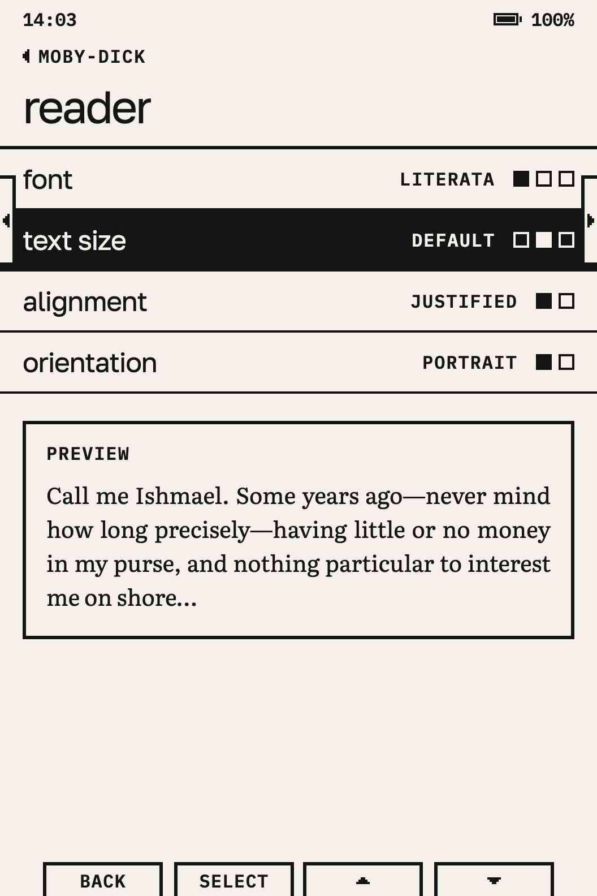
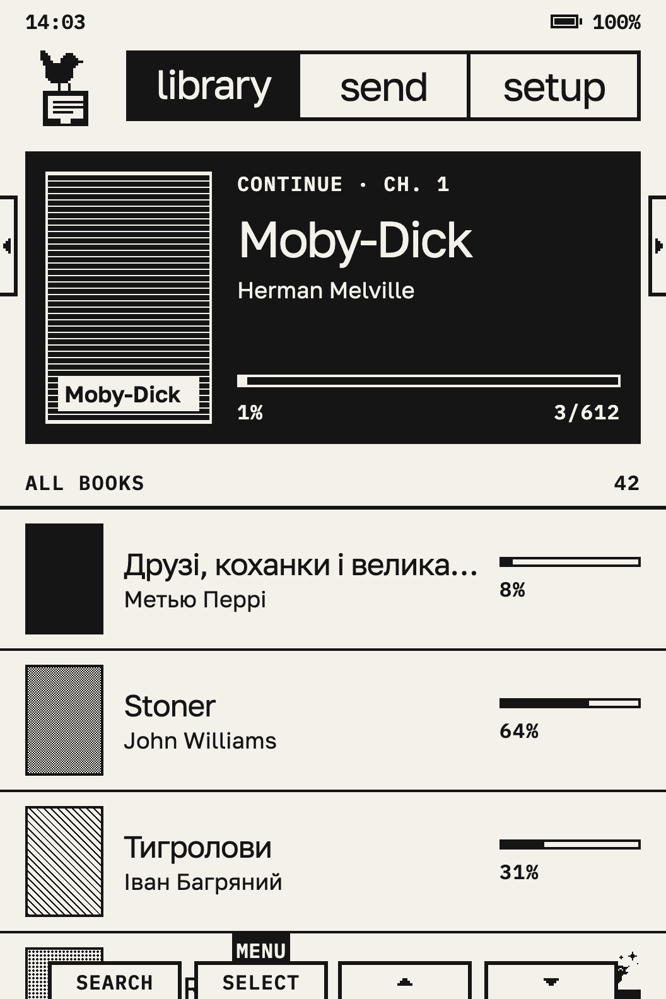
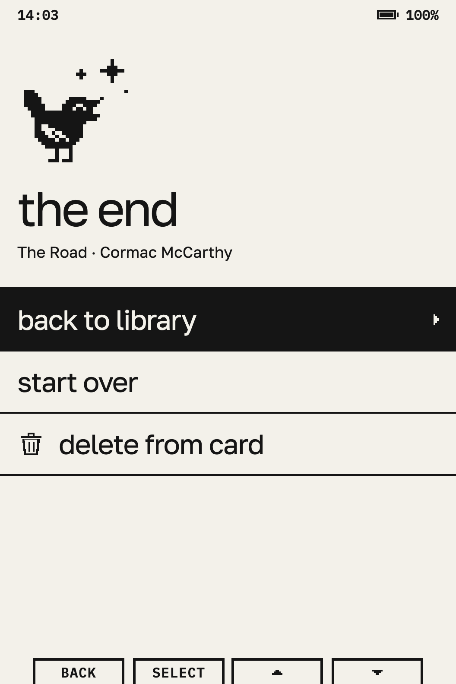

books, ready to read
good type and spacing, set before you open a book

a quieter way to read on your xteink
ahh... please, use chrome to install wren
get chromeedge works too
oh... open this page in chrome on your computer
plug in and wake your reader
which reader do you have?
installing wren...
keep the cable connected
ready to read
0%
unplug the cable, then press the power button to restart
for literata, golos and bitter, unzip fonts.zip and copy the fonts folder to your sd card
fonts.zipconnection ended
unplug the cable, wake the reader, plug it back in and try again
good type and spacing, set before you open a book
font, size, alignment, orientation. that's it

open the reader, pick up your book. the rest is two tabs away

wi-fi, hotspot, calibre or sd card. nothing new to learn

built on crosspoint, so it works with the apps you have

your books stay on the card. crosspoint is one install away